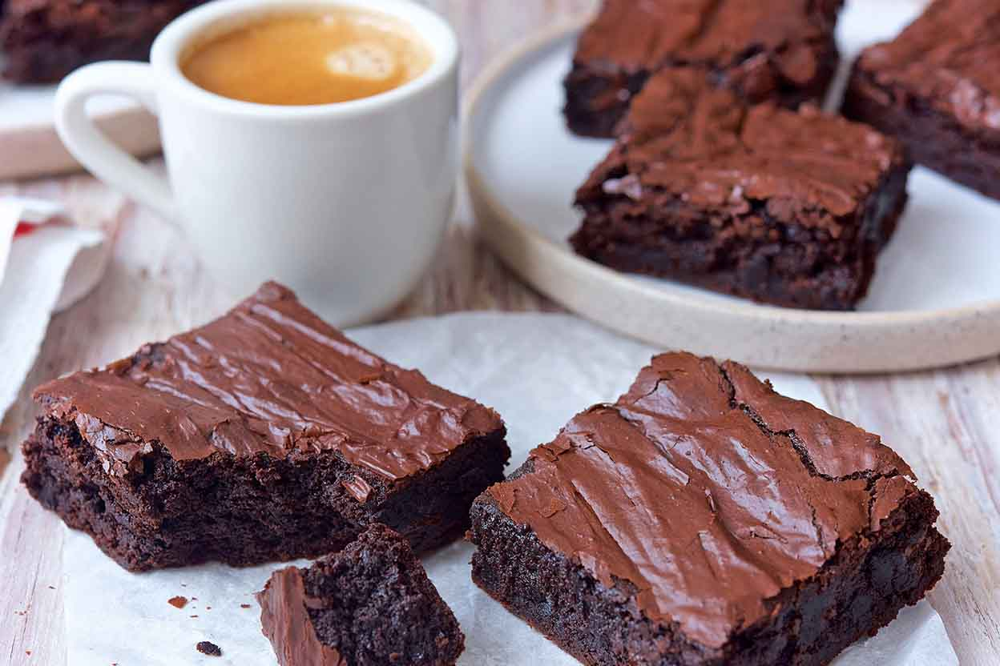

A chocolate brownie (commonly referred to simply as a brownie) is a square or rectangular, chocolate baked treat. Brownies come in a variety of forms and may be either fudgy or cakey, depending on their density. They may include nuts, frosting, cream cheese, chocolate chips, or other ingredients. A variation made with brown sugar and vanilla rather than chocolate in the batter is called a blond brownie or blondie. The brownie was developed in the United States at the end of the 19th century and popularized in the U.S. and Canada during the first half of the 20th century.
Preheat oven to 350 degrees F (175 degrees C). Grease and flour an 8-inch square pan.
In a large saucepan, melt 1/2 cup butter. Remove from heat, and stir in sugar, eggs, and 1 teaspoon vanilla. Beat in 1/3 cup cocoa, 1/2 cup flour, salt, and baking powder. Spread batter into prepared pan.
Bake in preheated oven for 25 to 30 minutes. Do not overcook.
To Make Frosting: Combine 3 tablespoons softened butter, 3 tablespoons cocoa, honey, 1 teaspoon vanilla extract, and 1 cup confectioners' sugar. Stir until smooth. Frost brownies while they are still warm.
Recipie by: Angie
Back to top